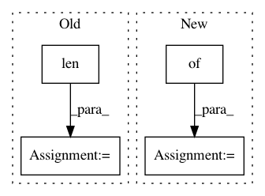

286a8cb1abde6e030e935734509d7f6832ce0f7f,OpenNMT/train.py,,main,#,307
Before Change
print(" * number of training sentences. %d" % len(trainData.src))
print(" * maximum batch size. %d" % opt.max_batch_size * pool.count)
else:
metadata = dict(
options=opt,
vocabSize=dict(
source=dataset.dicts.src.words.size(),
target=dataset.dicts.tgt.words.size()
),
additionalFeatures=dict(
source=len(dataset.dicts.src.features),
target=len(dataset.dicts.tgt.features)
),
sequenceLength=dict(
source=trainData.maxSourceLength,
target=trainData.maxTargetLength
),
trainingSentences = len(trainData.src)
)
onmt.utils.Log.logJson(metadata)
After Change
if not opt.json_log:
print("Building model...")
model = {}
if checkpoint.models:
encoder = onmt.Models.loadEncoder(checkpoint.models.encoder, idx > 1)
decoder = onmt.Models.loadDecoder(checkpoint.models.decoder, idx > 1)
else:
In pattern: SUPERPATTERN
Frequency: 5
Non-data size: 4
Instances
Project Name: OpenNMT/OpenNMT-py
Commit Name: 286a8cb1abde6e030e935734509d7f6832ce0f7f
Time: 2016-12-23
Author: alerer@fb.com
File Name: OpenNMT/train.py
Class Name:
Method Name: main
Project Name: chainer/chainercv
Commit Name: d9d12025ace01f43b2004ba226d0fb5a133f0b3d
Time: 2018-07-09
Author: shingogo@hotmail.co.jp
File Name: examples/fcis/mxnet2npz.py
Class Name:
Method Name: main
Project Name: ray-project/ray
Commit Name: 1b1466748f1db72835a594d73d502e9787e080a9
Time: 2020-09-04
Author: wlx65005@gmail.com
File Name: streaming/python/runtime/transfer.py
Class Name: DataReader
Method Name: __init__
Project Name: ray-project/ray
Commit Name: f31ee84bfdc6dc2325c8890412a965e509074d0a
Time: 2020-09-05
Author: wlx65005@gmail.com
File Name: streaming/python/runtime/transfer.py
Class Name: DataReader
Method Name: __init__
Project Name: williamFalcon/pytorch-lightning
Commit Name: 0e8ec93b28ecd86898b3668d48d346f510e95167
Time: 2021-01-06
Author: jspaezp@users.noreply.github.com
File Name: pl_examples/domain_templates/computer_vision_fine_tuning.py
Class Name: TransferLearningModel
Method Name: validation_epoch_end